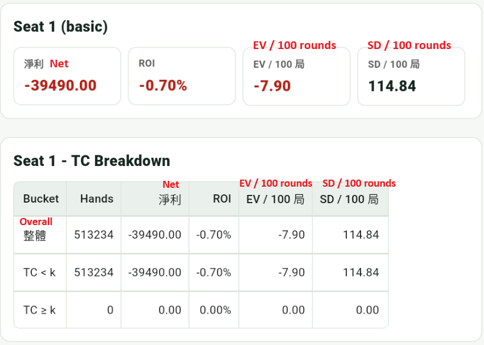
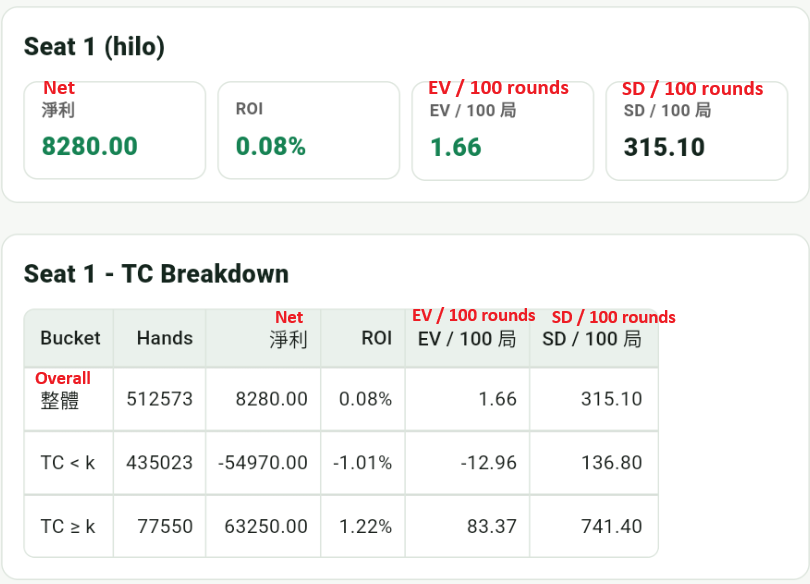

EV, Scale, and Variance
The key point in blackjack is that the edge is usually small while variance is large. These numbers are scale intuition, not guarantees.
Basic Strategy (No Counting)
- With common 6D / H17 / DAS / 3:2 rules, the house edge is roughly 0.4%-0.7%.
- With S17, the game is usually about 0.1%-0.3% better for the player.
- 6:5 blackjack is usually poor and not recommended.
Scale intuition: with a 1-unit bet each hand, -0.5% is about losing 1 unit per 200 hands in the long run, but short-term swings are usually much larger.
Basic Strategy Simulation
The result below uses basic strategy without counting over about 500,000 rounds. Overall ROI is -0.70%, EV / 100 rounds is -7.90, and SD / 100 rounds is 114.84.

These numbers match the earlier scale intuition: without counting, ROI is negative and the house edge slowly takes over in the long run. But SD / 100 rounds is still 114.84, so short-term results can be much larger than the expectation itself.
Adding Card Counting (Hi-Lo + Ramp)
- With good rules, decent penetration, and TC-based bet adjustment, the overall expectation can become positive.
- A common scale is roughly +0.3% to +1.5% of total amount bet.
- What players feel most is usually not the small edge itself, but variance combined with the number of rounds.
The actual range is heavily affected by rules, penetration, table limits, and bet ramp.
Variance
Blackjack is a game of small edges and large swings; short-term results are often just noise.
- A unit is your base bet size.
- A common single-hand swing is around +/-1.1 to 1.3 units.
- If the edge is +1%, the expectation is about +0.01 unit per hand, but single-hand volatility is about +/-1.2 units. Over 100 hands, the expectation is only about +1 unit, while a +/-12 unit swing is still completely normal.
App Simulation Stats
The result below uses Hi-Lo with Bet Ramp 2/4/6/8/12 over 500,000 rounds. Overall ROI is +0.08%, EV / 100 rounds is +1.66, and SD / 100 rounds is 315.10.

These numbers match the scale idea above: ROI is positive, but only +0.08%, still a small long-term edge. Per 100 rounds, EV is +1.66 while SD is 315.10. When TC >= k, ROI rises to +1.22% and EV / 100 rounds rises to 83.37, but SD / 100 also rises to 741.40. Counting improves long-term expectation, but short-term results are still dominated by variance.